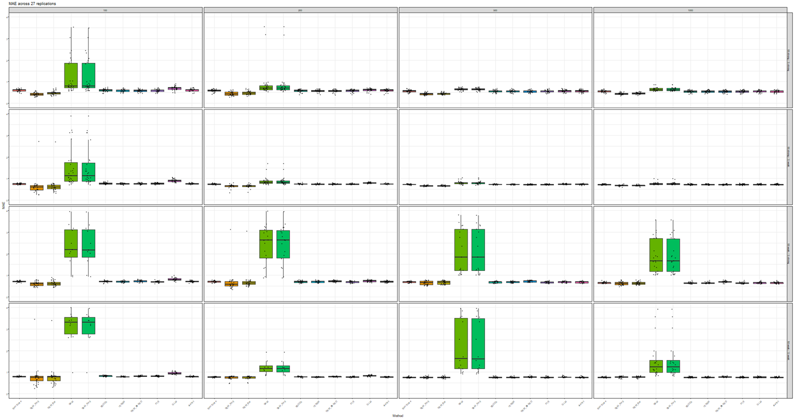

Simulation Draft
Simulation Settings
The model settings for this simulation study are based on Rooij et al. (2023). In the structural model, nine latent variables (\eta_x) predict one outcome indicator (y). Each latent variable is measured by four observed indicator items, resulting in a total of 37 observed (simulated) variables (see Figure 1).

Figure 1. Fully reflective SEM for the simulation study
Design Factors
The simulation design includes three key factors:
Sample size of the training set
Strength of the relationships in the measurement model
Strength of the relationships in the structural model
Sample sizes
The training sample size factor includes four levels: 100, 200, 500, and 1,000, representing a broad range of conditions. The test set size is fixed at 1,000 observations across all conditions.
Measurement model
The strength of the relationships between the nine latent variables and their respective indicators has two levels: weak and strong. In the weak condition, factor loadings are drawn from a uniform distribution between 0.20 and 0.50. In the strong condition, factor loadings are also drawn from a uniform distribution between 0.50 and 0.80. Item means are generated from a uniform distribution ranging from 1.50 to 3.00.
Structural model
The relationships between the latent variables and the predicted indicator also vary in strength across two levels: weak and strong. For the weak condition, regression coefficients are drawn from a uniform distribution between 0.15 and 0.25. For the strong condition, coefficients are drawn from a uniform distribution between 0.25 and 0.40. The signs of the regression coefficients match those used in the empirical example reported by de Rooij (2023).
Data generation
Data generation was carried out in two ways: factor-based and composite-based. In both methods, the generated data were divided into a training set and a test set at the final step of the procedure.
Factor-based data generation
The factor-based data generation procedure follows the approach described in Rooij et al. (2023). Factor scores were first generated from a multivariate distribution based on the covariance matrix reported in their empirical study. Next, the indicator values for the nine latent variables were computed using the specified loadings and factor scores. The residual variances of the indicators were defined as 1-\lambda^2, where \lambda represents the factor loading, ensuring that each indicator has unit variance. The predicted indicator was then calculated from the factor scores and regression coefficients, with its variance also set to one.
Composite-based data generation
In general, three scenarios can be distinguished in composite-based models: formative–formative (F–F), formative–reflective (F–R), and reflective–reflective (R–R). Rainer Schlittgen et al. (2020) demonstrated a composite-based data generation procedure that produces data from composite-based populations using the cbsem R package across all these scenarios. In this study, the R–R scenario was employed, in which outer weights are not required. The procedure requires the specification of path coefficients, loadings, and the variances and covariances of the exogenous constructs (see the vignette of the cbsem R package for further details) (R. Schlittgen, 2020).
Result
The methods presented in the block are ordered from left to right as follows:
- SumScore: sum scoring method
- SEM_Reg: CB-SEM using regression method to calculate factor score
- SEM_Bar: CB-SEM using Barlett method to calculate factor score
- SAM: structural after measurement using Barlett method to calculate factor score
- SAM_Reg: structural after measurement using regression method to calculate factor score
- SGCCA: Sparse generalized canonical correlation analysis
- rESEM: regularized ESEM from Tra
- SEM_BASED: SEM based rule from de Rooij
- PLS: partial least square
- GLM: linear regression
- elastic: elastic net
All conditions (M: weak, strong; S: weak, strong)
The X-axis is the training data sample size 100, 200, 500, 1000 from left to right.
The Y-axis is the strength of the relationships in the measurement and structural model. From top to bottom is M: strong & S: strong, M: strong & S: weak, M: weak & S: strong, and M: weak & S: weak.
I tried to fix the SAM method but we can see from the plot that result is quite unusual across both data generation method. I also drew plots with all conditions without SAM method below: Factor-based (without SAM)
I found out that plotting all conditions is very reader unfriendly so I also plotted boxplot with only two conditions below:
Factor-based (All method)
Composite-based (All method)

Factor-based (without SAM)